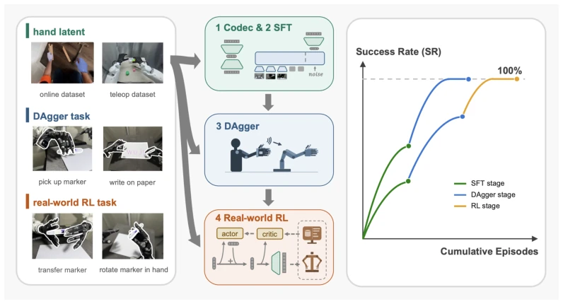
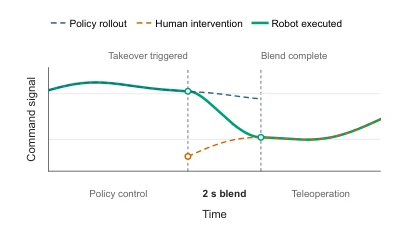
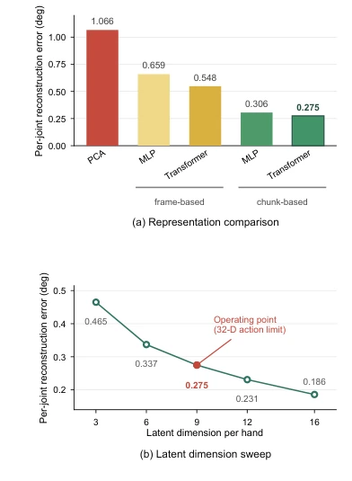
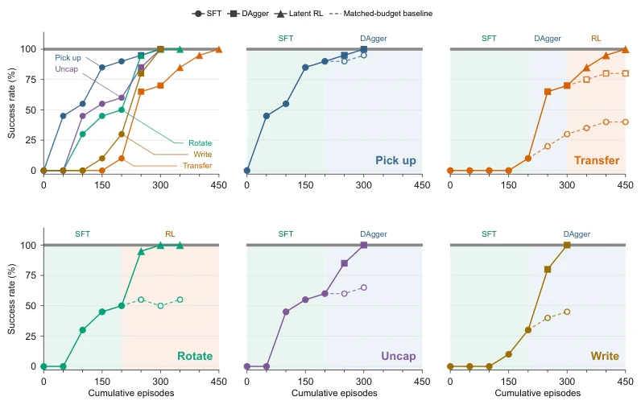
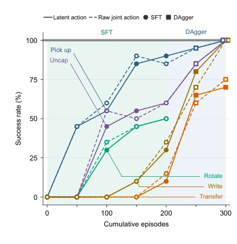
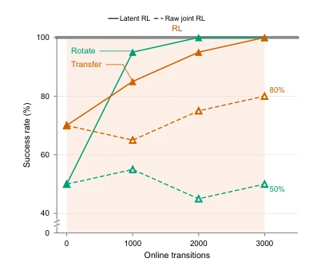
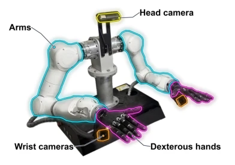
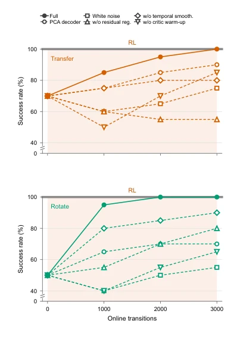

Vision-Language-Action (VLA) 基础模型虽然泛化性强，但在具体灵巧操作任务上直接部署往往翻车。灵巧手的高自由度（High-DoF）带来了巨大的结构化动作空间，导致三个核心痛点：首先，开源VLA缺乏直接控制高自由度灵巧手的动作接口，导致语义不匹配；其次，在人机协同（DAgger）接管时，操作者的手势与机器人当前指令的绝对值差异会导致动作不连续，甚至污染修正数据（如将手势对齐误录为任务修正）；最后，在原始关节空间进行强化学习（RL）样本效率极低，难以在接触丰富的动力学环境中探索有效策略。现有工作如DexHiL (Han et al. 2026) 和HandITL (Li et al. 2026b) 虽然关注了干预问题，但多采用相对控制或共享手臂控制，未解决绝对指令接口下的平滑接管问题。而纯RL方法（如OpenAI等）在真实机器人上样本成本过高。因此，亟需一种能统一动作接口、保证修正数据纯净且探索高效的微调范式。
—

Figure 1. Overview of dexterous policy post-training. A learned hand-action representation provides a common interface for supervised fine-tuning, corrective data aggregation, and real-world latent residual reinforcement learning, which progressively improve task success. The curves on the right schematically illustrate improvement across post-training stages.
Figure 2. Overview of our pipeline. Codec. A chunk-level VAE is trained per hand on teleoperation, task and retargeted human-video data, compressing each hand from 20 to 9 dimensions; the resulting codec (E, D) is frozen. SFT and DAgger. Demonstrations are expressed through E as latent supervision targets, and the VLA is fine-tuned to emit latent actions in that space, with DAgger-style operator takeovers folded back into the corpus. The policy is frozen thereafter. Here, ℓdenotes the language instruction and q the measured proprioceptive state. Real-world RL. The RL-token encoder is trained on demonstration data before online RL 1⃝and kept frozen during online RL 2⃝. Online, the frozen policy emits zref with no encoding step, the RL token hrl is read out from the frozen prefix, and an act

Figure 3. Smooth hand-command transition during a DAgger takeover. Dashed curves show the policy and teleoperation commands, while the solid curve shows the command executed by the robot. At takeover, the executed command transitions over 2 s from the last policy command to the live teleoperation command and remains continuous across the switch.

Figure 6. Hand-action codec analysis. Panel (a) compares the reconstruction error of five compression methods, all using nine latent dimensions per hand. Panel (b) shows the reconstruction error of the chunk-level Transformer codec as the latent width varies. All errors are measured on the same held-out validation set, reported in degrees per joint, and pooled across the 40 joints of both hands. The nine-dimensional operating point is selected to satisfy the pretrained policy’s 32-dimensional action interface.
Figure 5. The five marker-manipulation tasks used for evaluation: Pick Up Marker, Transfer Marker between Hands, Rotate Marker in Hand, Remove Marker Cap, and Write on Paper. The tasks cover grasping, bimanual transfer, in-hand manipulation, object separation, and contact-rich writing. The yellow-to-red arrow orders the tasks from easier to harder.

Figure 7. Success rate as a function of cumulative episodes collected. The overview panel overlays the trajectories for all five tasks, labelled directly on their curves; the remaining panels show the tasks individually. Marker shapes identify training methods: circles for SFT, squares for DAgger, and triangles for latent residual RL. Solid lines with filled markers show our staged pipeline; dashed lines with open markers show matched-budget baselines that continue the indicated method. Background shading marks the stage reached by the main pipeline. Each checkpoint is evaluated over 20 trials. Rotate Marker in Hand admits no corrections and moves directly from SFT to online RL.

Figure 8. Imitation learning in the raw joint space and the learned hand-latent space across the five tasks.

Figure 9. Comparison of latent residual RL and raw-space residual RL over online interaction.
其他图片Other Figures

Figure 4. Robot platform used for data collection and evaluation. The system comprises two 7-DoF Tianji arms, two 20-DoF Wuji dexterous hands, one RGB wrist camera mounted on each arm, and one RGB head camera.

Figure 10. Ablation of five latent residual RL design choices on Transfer Marker between Hands and Rotate Marker in Hand. Each variant changes one component while retaining the remaining optimisation settings. Curves report measured success rates.